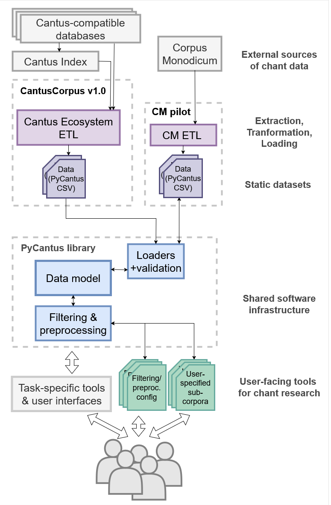

PyCantus Development Documentation
PyCantus is a lightweight Python library for loading and manipulating Gregorian chant data, e.g. the CantusCorpus v1.0 dataset. The “division of labour” between the library and dataset is shown in the schema bellow. Most importantly, PyCantus implements a data model for CantusCorpus v1.0. However, the library is an independent component, so the data model can be reused for datasets assembled from other sources of chant data (e.g. Corpus Monodicum database).

PyCantus functionality is introduced by a tutorials which guides the user through the steps required to prepare a sub-corpus for experiments. The library source code and documentation are available at https://github.com/dact-chant/PyCantus.
The design of the library is influenced by the idea of two different kinds of users: a group of programmers who are getting into Gregorian chant, and then (hopefully) a group of chant experts who are getting into its computer processing.
Therefore in design choices of some features one can observe an unusual inflexibility. That is motivated by attempts to do not let people shoot themselves into foot too easily. Also the data are kind of “alive” and so part of the responsibilities that would usually lie on such library is in this case “in the datasets” (this holds especially around validation).
Content
Data Model
The core of PyCantus is the data model the Chant and Source classes representing the corresponding items of the dataset,
a Corpus class to aggregate them, and a Melody class to support abstracting away from specific melody encodings in the future. (We are aware of the chant21 library, but we opted not to make music21 a core dependency of PyCantus.)
Classes related to data model has its implementations in models folder.
For all four data classes we can divide their data attributes into to groups:
Data related (data fields based on CantusCorpus v1.0 structure)
Functional (quality-of-life fields such as locking or more flexible melody handling)
Besides that, some of the data model classes has convenience methods described bellow.
Here is a schema of the data model:

Attributes in bold are primary keys (identifiers) - in case of Corpus it can be a pair.
Gray dashed lines signal foreign key relation.
The attribute locked is strictly functional attribute, that is initially set based on the value of is_editable attribute of Corpus class.
More details about data classes follow.
Corpus
Corpus class represents a collection of chants and sources.
It provides methods for loading, filtering, and exporting data related to the chants and sources.
The only way to initialize Corpus is via load from CSV files, it is not possible from chants and sources lists. That is due to the “good replicability practice” we wanted to emphasize. Good experiment
Attributes:
chants_filepath (str): path to file with chantssources_filepath (str): path to file with sourceschants_fallback_url (str): URL for chants file download, is used when loading from filepath failssources_fallback_url (str): URL for sources file download, is used when loading from filepath failsother_download_parameters (dict): [not used yet]is_editable (bool): indicates whether objects in Corpus should be lockedcheck_missing_sources (bool): indicates whether load should an raise exception if some chant refers to source that is not in sourcescreate_missing_sources (bool): indicates whether load should create Source entries for sources referred to in some of the chants and not being present in provided sources_chants (list): list ofChants in the corpus_sources (list): list ofSources in the corpusoperations_history (list): list of operations applied on the corpus (from predefined list - see methods with@log_operationdecorator)
Locked attribute
The ‘locking logic’ is quite simple. We don’t want people to shoot themselves in the foot, so we tried to force them to make changes in the state of their data (in Corpus) explicit. Besides that, it is also part of the ‘good replicability’ strategy we want to emphasize.
In the initialization of Corpus object, argument is_editable is passed (with default value set to False).
Then getters and setters of Corpus were overwritten so the ‘I am a locked corpus’ logic is controlled.
Value of the is_editable attribute is propagated into all Chants, Sources and Melodies in the Corpus with Corpus._lock_chants(), Corpus._lock_sources() and in Chant.create_melody(), where attribute locked is set to True if ‘is not editable corpus’. In these objects it “operates” in the overwritten method __settatr__ and limits access to others then locked attributes based on the value of locked. You can set the value of the locked attribute freely – because that makes the intervention in the data state explicit, but not impossible.
Methods
For easier work with the data few methods were implemented directly on Corpus.
export_csv(chants_path, sources_path)drop_duplicate_chants()drop_duplicate_sources()keep_melodic_chants()drop_empty_sources()drop_small_sources_data(min_chants)drop_incomplete_chants()apply_filter()get_operations_history_string()
Their description can be found in reference documentation.
Property Methods
Some of the methods of Corpus are decorated with @property so that they can be called as property (attribute) of the object, because that is the intuitive comprehension we have about them.
to_csv_row- “returns” string value, method constructs the correct string representing the Chant record as a row of CSV file (used e.g. inCorpus.export_to_csvmethod)sources- getter of_sourceschants- getter of_chantsmelody_objects- returns list ofMelodyobjects from chantscsv_chants_header- standardized CSV header string for chantscsv_sources_header- standardized CSV header string for sources
Chant
Chant class represents a single chant entry from some database.
It provides methods for creating, modifying, and exporting chant data in a standardized format.
Functional attributes:
locked (bool): Indicates whether the object is locked for editing. If True, no attributes can be modified.
For more info about ‘locking logic’ refer to description of this in the Corpus section.
Property methods
Some of the methods of Chant are decorated with @property so that they can be called as property (attribute) of the object, because that is the intuitive comprehension we have about them.
These are:
is_complete_chant- bool value (checks presence of full text and long enough melody)to_csv_row- string value, method constructs the correct string representing the Chant record as a row of CSV file (used e.g. inCorpus.export_to_csvmethod)
So we can have a piece of code:
if chant.is_complete_chant:
print(chant.to_csv_row)
Static methods
Method decorated with @static here is a Chant.header(). It returns standardized CSV header string for chants. By standardized we mean compatible with what Chant.to_csv_row returns.
Methods
Chant has only one standard method which is create_melody(). It creates a object of Melody class for the chant if it has some melody. Expects volpiano to be provided.
Source
Source class represents a single source entry from some database.
It provides methods for creating, modifying, and exporting source data in a standardized format.
Data related attributes:
title (str): * Name of the source (can be same as siglum)srclink (str): * URL link to the source in the external database (e.g., “https://yourdatabase.org/source/123”).siglum (str): * Abbreviation for the source manuscript or collection (e.g., “A-ABC Fragm. 1”). Use RISM whenever possible.numeric_century (int): Integer representing the value of century field.century (str): Century of source origin.provenance (str): Name of the place of source origin.cursus (str): Secular (Cathedral, Roman) or Monastic cursus of the source.
The * signals that such attribute always has some value (is not equal to None or empty string '').
Here we would like to point out the inconsistency in filling the data fields among source databases, about sources this holds even more then about chants.
Functional attributes:
locked (bool): Indicates whether the object is locked for editing. If True, no attributes can be modified. (functional attribute)
For more info about ‘locking logic’ refer to description of this in the Corpus section.
Property methods
Some of the methods of Source are decorated with @property so that they can be called as property (attribute) of the object, because that is the intuitive comprehension we have about them.
These are:
is_complete_chant- bool value (checks presence of full text and long enough melody)to_csv_row- string value, method constructs the correct string representing the Chant record as a row of CSV file (used e.g. inCorpus.export_to_csvmethod)
Static methods
Method decorated with @static here is a Source.header(). It returns standardized CSV header string for sources. By standardized we mean compatible with what Source.to_csv_row returns.
Melody
Melody class represents a single chant melody.
It is linked to a specific chant record via chantlink as an unique chant record identifier and also by being stored in the corresponding chant in Chant.melody_object.
Right now, it is designed in a volpiano-centric way, meaning it holds only the volpiano representation of the chant melody, if present. But it can be extended to hold other representations in the future (via new optional parameters).
We take the volpiano.utils as already prepared methods (functions) for working with volpiano and just wrapped them into Melody class methods.
For more detailed documentation of the methods, see the volpiano/utils.py module.
Data related attributes
cantus_id, chantlink and raw_volpiano are partly equal to those that were used in initialization of related Chant record (Melody.raw_volpiano == Chant.melody).
Having these here should just make things more convenient for working with melodies (e.g. when we want to take only list of melodies from corpus while not being interested in source information in such situation, while still being able to get it from chantlink when needed or when comparing what melody modifying operation did to the volpiano string).
volpiano (str): The melody encoded in volpiano notation (this is modified by melody related operations)chantlink (str): URL link directly to the chant entry in the external database.cantus_id (str): The Cantus ID associated with the chant.raw_volpiano (str): The original volpiano string before any processing.mode (str): Mode of the melody (e.g., “1”).
Functional attributes
locked (bool): Indicates if the object is locked for editing.
For more info about ‘locking logic’ refer to description of this in the Corpus section.
Methods
These are mostly wrappers for methods from volpiano.utils being applied to Melody.volpiano.
clean_volpiano()normlize_volpiano()expand_accidentals()normalize_liquescents()discard_differentia()get_range()
Their description can be found in reference documentation of Melody and volpiano.utils.
Loaders + validation
The data.load_dataset(...) function from the data module (implemented in data.py) is used to load the dataset into the Corpus object and collect all needed parameters as well as .
Data are loaded into the Corpus class via a CsvLoader object (implemented in dataloaders/loader.py).
The loader also handles the possible download of missing CSV files from provided fallback URL addresses and
validation.
Given the lack of controlled vocabularies, currently it cannot do more than check whether mandatory fields and their values are present and also optionally check unavailable source records (arguments check_missing_sources and create_missing_sources).
As was just written, the only validation we implemented into PyCantus is checking if mandatory fields have some value present - but not what value it is…
As Cantus Index is growing quite quickly it can hardly be updated enough to e.g. check validity Cantus IDs. Also making these controlled vocabularies for fields is not our decision to make in general. (To have an idea how difficult this can be refer to Harmonization issues report in CantusCorpus v1.0 and/or tutorial 02_intro_to_chant_data.ipynb.)
Another reason for not making validation strict part of the procedure of loading data into PyCantus is an accessibility of the library for people outside Cantus ecosystem. For data ‘not from Cantus Index world’ one can assign arbitrary values into non-relevant fields (e.g. Cantus ID) and still use the library for their work.
While loading the data CsvLoader creates Source.numeric_century values from given century value (see get_numerical_century(str) function in dataloaders/loader.py).
Overall with preparing your own CSV files take care of formatting the file as a correct CSV. The Python library PyCantus is using for this is pandas. It can save some troubles but is not a magician, so especially \n characters inside lines can cause troubles with loading your data correctly.
Examples of CSV files to be loaded
Here we present examples of CSV files and how PyCantus would behave when loading them.
1. Correct example
chants.csv
chantlink,incipit,cantus_id,mode,siglum,position,folio,sequence,feast,feast_code,genre,office,srclink,melody_id,full_text,melody,db,image
https://musmed.eu/chant/118468,Humiliamini*,a01149,,F-Pn Lat. 17436,,028r,,Pro paenitentibus,,A,,http://musmed.eu/source/13502,,Humiliamini sub potenti manu dei ut vos exaltet in tempore visitationis omnem sollicitudinem vestram proicientes in eum quoniam ipsi cura est de nobis,,MMMO,https://gallica.bnf.fr/ark:/12148/btv1b8426787t/f61.item.zoom
https://cantusdatabase.org/chant/231265,Omnibus se invocantibus benignus adest,004141,4,CH-E 611,2.6,157v,,Nicolai,14120600,A,M,https://cantusdatabase.org/source/123606,,Omnibus se invocantibus benignus adest sanctus Nicolaus gloria tibi trinitas deus,1---fE--de--fdc---dc---d--ef--g--de--e---dh--hG--g---hk--hg-gfe---e--g---gh--hgfe--de--e77---efg--fe--d---g--f---gh--gfe--dE---e--e---4---h--g--h--k--g--e---3,CD,http://www.e-codices.unifr.ch/en/sbe/0611/157v/small
And here is how this looks opened in spreadsheet editor:

sources.csv
title,siglum,century,provenance,srclink,cursus
F-Pn : Lat. 17436,F-Pn Lat. 17436,9th century,Abbaye Saint-Corneille de Compiègne,https://musmed.eu/source/13502,Romanum
"Einsiedeln, Stiftsbibliothek, 611",CH-E 611,14th century,Einsiedeln,https://cantusdatabase.org/source/123606,Monastic
This pair of files will be loaded with PyCantus without any problems.
Though some columns are partially empty (e.g. office) and some are empty completely (e.g. feast_code) as these are not mandatory, everything is fine.
2. Missing sources
chants.csv
chantlink,incipit,cantus_id,mode,siglum,position,folio,sequence,feast,feast_code,genre,office,srclink,melody_id,full_text,melody,db,image
https://musmed.eu/chant/118468,Humiliamini*,a01149,,F-Pn Lat. 17436,,028r,,Pro paenitentibus,,A,,http://musmed.eu/source/13502,,Humiliamini sub potenti manu dei ut vos exaltet in tempore visitationis omnem sollicitudinem vestram proicientes in eum quoniam ipsi cura est de nobis,,MMMO,https://gallica.bnf.fr/ark:/12148/btv1b8426787t/f61.item.zoom
https://cantusdatabase.org/chant/231265,Omnibus se invocantibus benignus adest,004141,4,CH-E 611,2.6,157v,,Nicolai,14120600,A,M,https://cantusdatabase.org/source/123606,,Omnibus se invocantibus benignus adest sanctus Nicolaus gloria tibi trinitas deus,1---fE--de--fdc---dc---d--ef--g--de--e---dh--hG--g---hk--hg-gfe---e--g---gh--hgfe--de--e77---efg--fe--d---g--f---gh--gfe--dE---e--e---4---h--g--h--k--g--e---3,CD,http://www.e-codices.unifr.ch/en/sbe/0611/157v/small
sources.csv
title,siglum,century,provenance,srclink,cursus
F-Pn : Lat. 17436,F-Pn Lat. 17436,9th century,Abbaye Saint-Corneille de Compiègne,https://musmed.eu/source/13502,Romanum
With this pair of files reaction of PyCantus depends on parameters of initialization of Corpus:
If check_missing_sources is set to True:
We will recieve Error saying:
ValueError:
Source 'https://cantusdatabase.org/source/123606 : CH-E 611' from chants does not have record in provided sources!
If check_missing_sources is set to False and create_missing_sourcesis set to True:
PyCantus would not return Error and also will inform us, how many sources was created - that means how many Source entry was constructed from siglum and srclink columns of chants.csv (where title is taken equal to siglum).
PyCantus load works even without sources.csv file being passed.
3. Minimal example
Here is an example demonstrating how minimal validation is implemented in PyCantus (and so how minimal demands there are).
chants.csv
chantlink,incipit,folio,cantus_id,siglum,srclink,db
hello.com,Carpe Diem,42,754r,Siglum,https://cantus.org/911,CSK
sources.csv
title,siglum,srclink
Pride and Prejudice,MaledivesLib-22,www.howtouseinternet.io
With this file PyCantus will load everything happily.
No checking of existence of chantlink, sourcelink as well as Cantus ID is present in the library. Also these 7 and 3 are the minimal mandatory columns that has to be present in the files and filled for all lines for load to work in PyCantus.
Totally minimal working example would be fine even without sources.csv file (possibly with check_missing_sources parameter of Corupus init set to True but not necessarily).
4. Problems
1. Missing mandatory columns
For example:
Exception:
Error loading CSV sources.csv file: Missing mandatory fields in CSV: siglum
2. Missing value in mandatory column
For example:
Exception:
Error loading CSV chants.csv file: Missing mandatory field 'srclink' in chants in row 15
Filtering & preprocessing
Preprocessing besides filtering is implemented in functions of Corpus (such as drop_empty_sources() and similar ones).
For filtering class Filter is introduced (implemented in filtration/filter). It stores values for each data field of Chant and Source that has to be included in or excluded from the resulting sub-corpus.
Filtration is supposed to be called on Corpus with apply_filter(Filter) method, internally method apply(chants, sources) of the passed Filter is called. This methods iterates over passed Chants and Sources and keeps those meeting the filtration criteria (include and exclude values definitions).
The setup can be stored in YAML file (simple string representation) with export_yaml and then loaded into Filter with import_yaml(path) or import_string(yaml_string) methods on Filter .
History of operations
To support replicability we add sort of logging for selected operations so order of applied methods can be stored for later. For that there is HistoryEntry class, objects of whom are stored in a list that is a attribute of the Corpus class.
The process is secured using a decorator @log_operation, that has its implementation in history/utils.py.
Methods that are saved into self.operations_history of Corpus:
drop_duplicate_chants()drop_duplicate_sources()keep_melodic_chants()drop_empty_sources()drop_small_sources_data(int)apply_filter(Filter)drop_incomplete_chants()drop_incomplete_chants()and also if
Corpus.create_missing_sourcesisTrue, then that is noted to the history inCorpusinitialization
Whole history can be represented as one human-readable string via calling get_operations_history_string() method on Corpus. Besides the operations history it also returns paths to csv files used for intialization of the Corpus to emphasize the replicability.